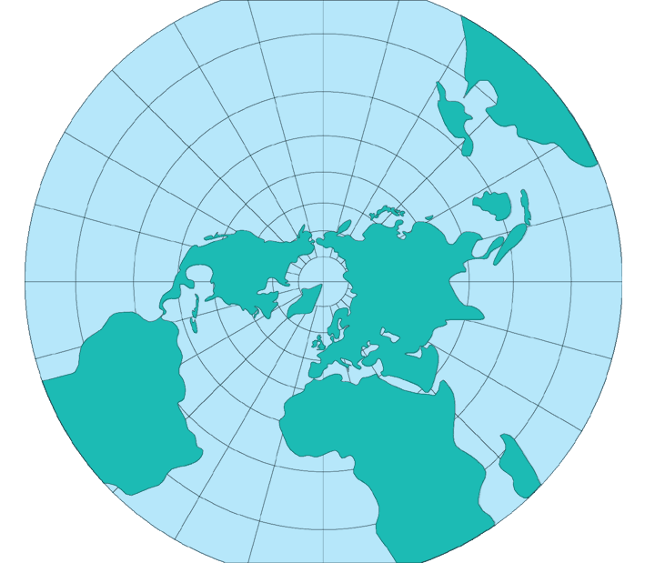

The oblique aspect of the Stereographic projection has been recently used in the spherical form by the USGS for circular maps of portions of the Moon, Mars, and Mercury, generally centered on a basin. The USGS is curently using the spherical oblique aspect to prepare 1:10,000,000-scale maps of Hydrocarbon Provinces for three continents after a least-squares analysis of over 100 points on each continent to determine optimum parameters for a common conformal projection.
The USGS has most often used the Stereographic projection in the polar aspect and ellipsoidal form for maps of Antartica. In 1962, a United Nations conference changed the polar portion of the International Map of the World from a modified Polycondic to the polar Stereographic. The Astrogeology Center of the Geological Survey at Flagstaff, AZ, has been using the polar Stereographic for the mapping of polar areas of every planet and satellite for which there is sufficient information. The USGS is preparing a geologic map of the Arctic drawn to the Stereographic projection.
* Usage information source:
Snyder, John P. Map Projections - A Working Manual Paper U.S. Geological Survey Professional Paper 1395. Washington: United States Government Printing Office, 1987.